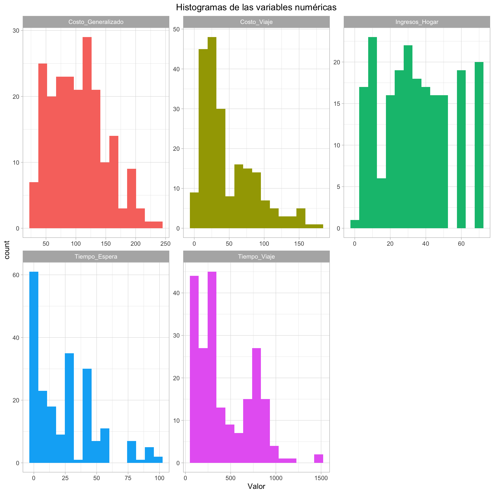
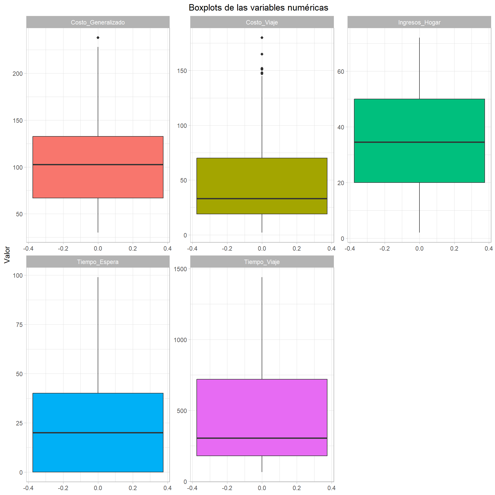
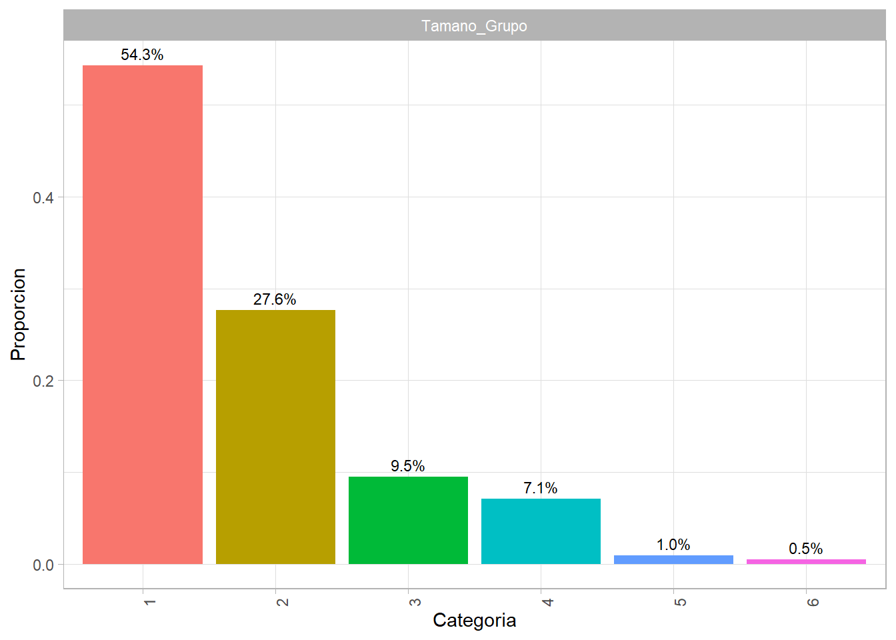
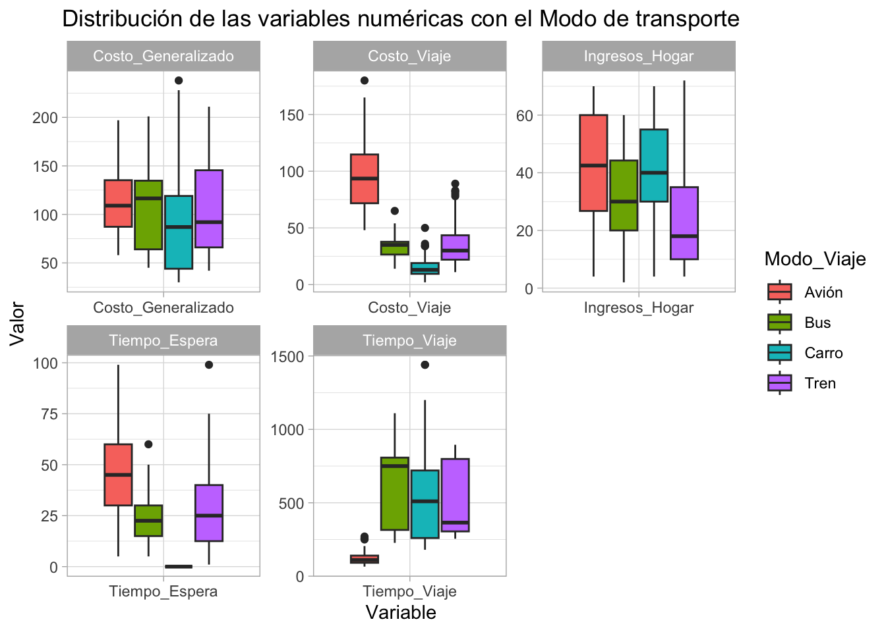
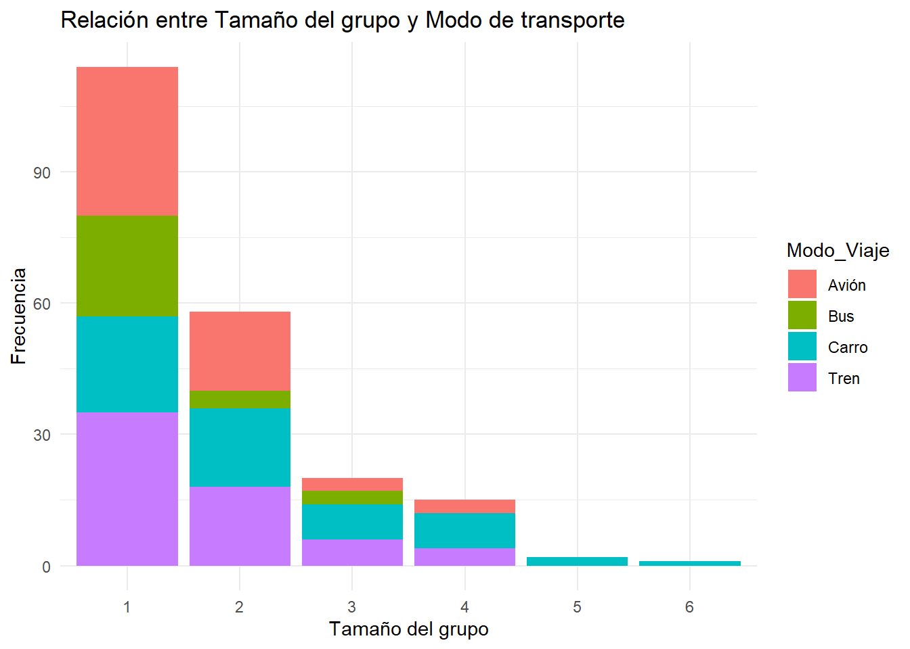
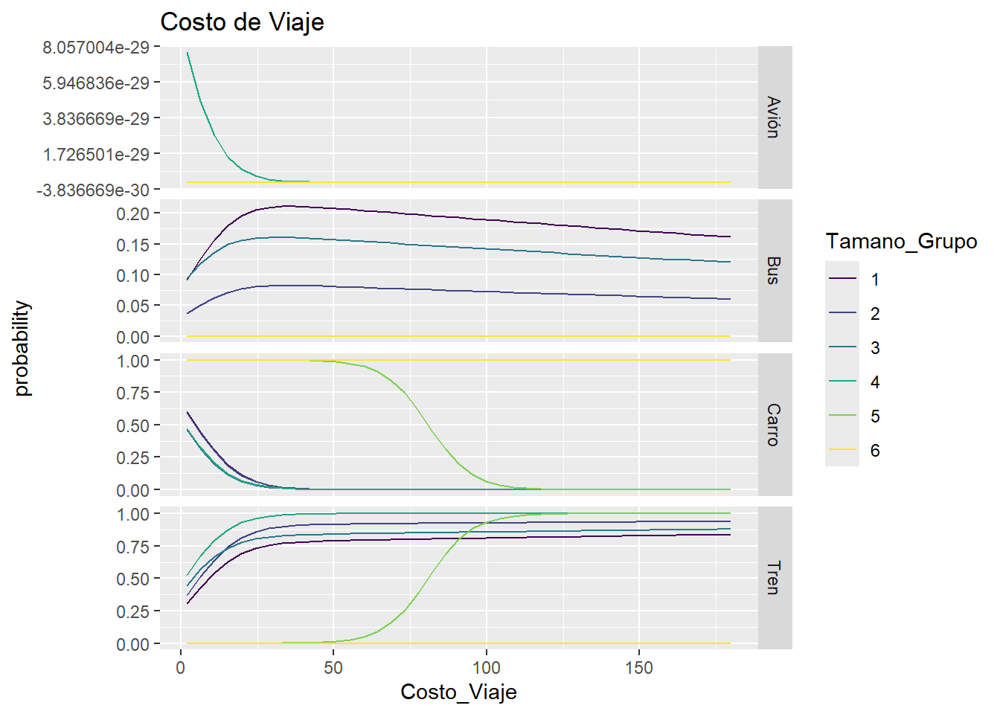
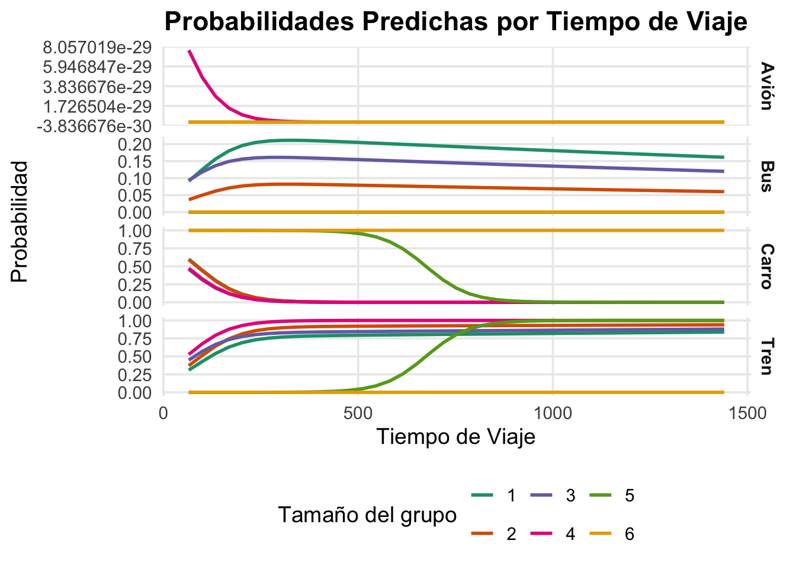
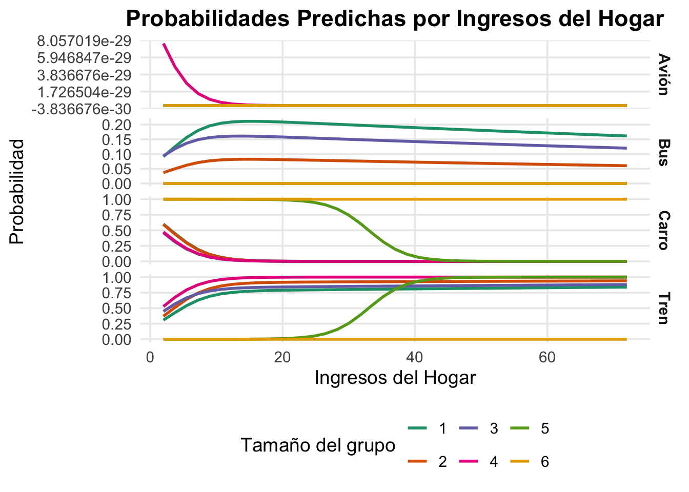
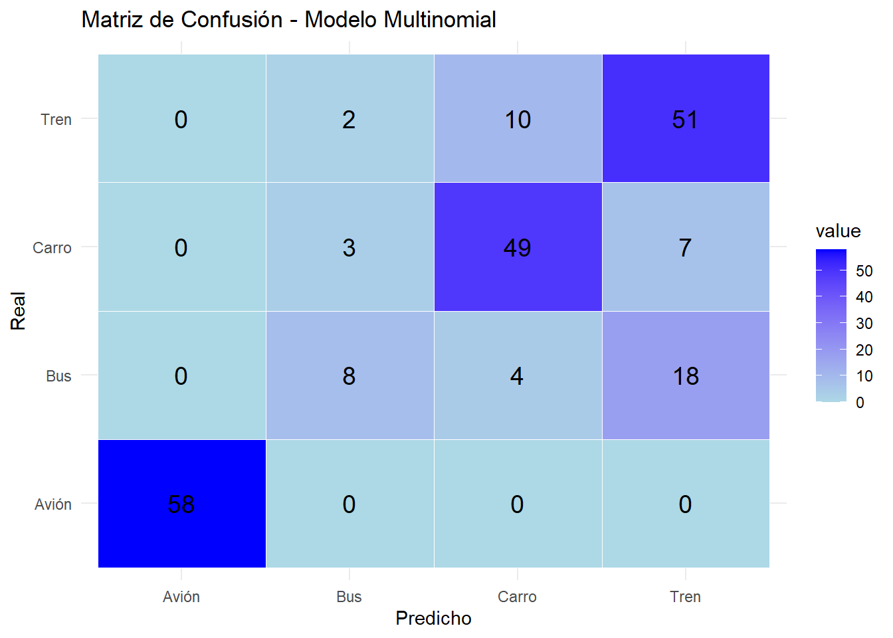

| Variables | Tipo_Variable | Descripción |
|---|---|---|
| Tiempo_Espera | Cuantitativa | Tiempo de espera en terminal |
| Costo_Viaje | Cuantitativa | Costo del viaje |
| Tiempo_Viaje | Cuantitativa | Tiempo de viaje |
| Costo_Generalizado | Cuantitativa | Costo generalizado del viaje |
| Ingresos_Hogar | Cuantitativa | Ingresos del hogar |
| Tamano_Grupo | Ordinal | Tamaño del grupo que viaja |
| Modo_Viaje | Nominal/Variable objetivo | Modo de transporte |
Taller 3 - Modelo Regresión Multinomial
0. Información general
En este trabajo se identificarán qué factores inciden en la preferencia de modo de transporte: Avión, Tren, Bus y Carro.
Este problema es idóneo para un modelo de regresión multinomial (MNL) porque:
La variable de respuesta, Modo_Viaje, es nominal. No hay un orden natural entre las categorías (el Avión no es inherentemente mejor o peor que el Carro, o el Tren es mejor o peor que Bus, entre otros escenarios ).
Hay más de dos categorías, lo que descarta el uso de modelos de regresión logística binaria.
La categoría base para la interpretación del modelo, según la ordenación alfabética por defecto de R, será Avión. Todas las comparaciones se realizarán con respecto a esta categoría de referencia.
Además, Se presta especial atención a la estructura de los datos: para atributos específicos por alternativa (tiempo, costo) es imprescindible conservar el formato long (una fila por alternativa por individuo) y una variable binaria Choice que indique la alternativa escogida.
Las variables a analizar son las siguientes:
1. Análisis exploratorio
1.1. Revisión de datos faltantes
| x | |
|---|---|
| Modo_Viaje | 0 |
| Tiempo_Espera | 0 |
| Costo_Viaje | 0 |
| Tiempo_Viaje | 0 |
| Costo_Generalizado | 0 |
| Ingresos_Hogar | 0 |
| Tamano_Grupo | 0 |
No se identificaron datos faltantes en el conjunto de datos, lo que permite un análisis completo sin necesidad de imputación.
1.2. Resumen de las variables
| Modo_Viaje | Tiempo_Espera | Costo_Viaje | Tiempo_Viaje | Costo_Generalizado | Ingresos_Hogar | Tamano_Grupo | |
|---|---|---|---|---|---|---|---|
| Avión:58 | Min. : 0.00 | Min. : 2.0 | Min. : 65.0 | Min. : 30.0 | Min. : 2.00 | 1:114 | |
| Bus :30 | 1st Qu.: 0.00 | 1st Qu.: 19.0 | 1st Qu.: 180.0 | 1st Qu.: 67.0 | 1st Qu.:20.00 | 2: 58 | |
| Carro:59 | Median :20.00 | Median : 33.0 | Median : 305.0 | Median :102.5 | Median :34.50 | 3: 20 | |
| Tren :63 | Mean :25.01 | Mean : 47.4 | Mean : 430.8 | Mean :103.8 | Mean :34.55 | 4: 15 | |
| NA | 3rd Qu.:40.00 | 3rd Qu.: 70.0 | 3rd Qu.: 720.0 | 3rd Qu.:132.8 | 3rd Qu.:50.00 | 5: 2 | |
| NA | Max. :99.00 | Max. :180.0 | Max. :1440.0 | Max. :238.0 | Max. :72.00 | 6: 1 |
Conversión a factores: Las variables Tamano_Grupo y Modo_Viaje se convirtieron a factores. Se aclara que Tamano_Grupo es ordinal (los grupos tienen un orden de tamaño) y Modo_Viaje es nominal (sin orden).
Hallazgos Clave: Existe una alta correlación entre Costo_Generalizado y (Costo_Viaje y Tiempo_Viaje), Costo_Generalizado es una variable compuesta de Costo_Viaje y Tiempo_Viaje, lo que genera una multicolinealidad perfecta que sesgaría el modelo. Por lo tanto, se eliminará esta variable. De forma similar.


Los histogramas permite observar que:
Tiempo_Espera: La distribución de esta variable probablemente estará sesgada a la derecha, con la mayoría de los valores concentrados en tiempos de espera bajos y algunos viajes con tiempos de espera significativamente más largos.
Costo_Viaje: De manera similar, se espera una distribución sesgada a la derecha, con muchos viajes de bajo costo y una cola de viajes más caros (probablemente los aéreos).
Tiempo_Viaje: La distribución de esta variable podría ser bimodal, con un pico para los viajes cortos (en carro o bus) y otro para los viajes largos (en avión).
Ingresos_Hogar: La distribución de los ingresos suele estar sesgada positivamente, con la mayoría de los hogares en rangos de ingresos medios y bajos, y una pequeña fracción de hogares con ingresos muy altos.
Los boxplots permite observar que:
Modo_Viaje: Este gráfico mostrará la cantidad de individuos que prefieren cada modo de transporte. Podría haber un modo de transporte dominante.
Tamano_Grupo: Este gráfico revelará la frecuencia de cada tamaño de grupo (por ejemplo, 1, 2, 3 o más personas), lo que puede ser un factor relevante en la elección del medio de transporte (por ejemplo, los grupos grandes podrían preferir el carro).

Hallazgos del Análisis de Variables Cualitativas:
Dominio de Grupos Pequeños: La mayoría de las observaciones en el dataset corresponden a grupos de viaje pequeños. Se puede observar que los grupos de 1 o 2 personas son los más frecuentes en la muestra, representando la mayor proporción de los datos.
Frecuencia Decreciente: A medida que el tamaño del grupo aumenta, su frecuencia en el dataset disminuye significativamente. Los grupos de 5 o 6 personas son considerablemente menos comunes.
Relevancia para el Modelo: Este análisis exploratorio es crucial, ya que la variable Tamano_Grupo es un factor clave en el modelo de regresión multinomial. La distribución de esta variable indica que el modelo tendrá más información para estimar la probabilidad de elección de transporte para grupos pequeños que para grupos grandes.
1.3. Análisis bivariado

Hallazgos del Análisis Bivariado:
Relación Costo-Tiempo vs. Modo de Viaje: Los boxplots muestran que los viajeros que eligen avión tienen los costos más altos y los tiempos más cortos, mientras que los que eligen carro tienen los costos más bajos y los tiempos más largos. Esto es consistente con la idea de que los viajeros balancean el costo y la eficiencia.
Impacto de los Ingresos: Los ingresos del hogar son notablemente más altos para quienes eligen el avión, lo que sugiere que una mayor capacidad económica se asocia con una preferencia por opciones de viaje más rápidas.
Problema de Multicolinealidad: La matriz de correlación revela una correlación extremadamente alta entre Costo_Generalizado y Tiempo_Viaje (r>0.9). Para evitar sesgos en el modelo, el Costo_Generalizado debe ser eliminado del análisis de regresión

Hallazgos de la Matriz de Correlación:
Multicolinealidad Crítica: El hallazgo más importante es la correlación casi perfecta entre el Costo_Generalizado y el Tiempo_Viaje. Esta relación, cercana a 1, confirma una multicolinealidad severa. Por lo tanto, el Costo_Generalizado debe ser excluido del modelo de regresión para evitar estimaciones sesgadas y una interpretación incorrecta de los resultados.
Relaciones Intuitivas: Existe una correlación moderada entre Costo_Viaje y Tiempo_Espera (r=0.63). Esto tiene sentido, ya que los viajes más costosos (como los vuelos) suelen requerir más tiempo de espera en la terminal.
Ausencia de Correlaciones Fuertes: Fuera de la multicolinealidad detectada, no hay otras correlaciones fuertes entre las variables. Esto es positivo, ya que permite que el modelo estime los efectos individuales de cada variable de manera más limpia.

Hallazgos Clave de la Relación entre Tamaño del grupo y Modo de transporte:
El Carro domina para grupos grandes: El hallazgo más significativo es que, a medida que el tamaño del grupo aumenta, el carro se convierte en el modo de transporte abrumadoramente predominante. Esto se debe a la eficiencia logística y la reducción del costo por persona.
Avión y Tren para grupos pequeños: El avión y el tren son opciones más populares para grupos de una o dos personas. La frecuencia de estas opciones disminuye drásticamente a medida que el grupo se hace más grande, lo que sugiere que son menos atractivas o más costosas para viajes en grupo.
El Bus es una opción de nicho: El bus tiene una presencia relativamente baja en todos los tamaños de grupo, lo que lo posiciona como una opción menos preferida en comparación con las demás.
2. Modelo multinomial
# weights: 40 (27 variable)
initial value 291.121816
iter 10 value 147.782539
iter 20 value 106.601389
iter 30 value 103.150919
iter 40 value 102.805410
iter 50 value 102.803334
final value 102.803331
converged
Coefientes (Intercept) Costo_Viaje Tiempo_Viaje Ingresos_Hogar Tamano_Grupo.L
Bus 46.15633 -4.112399 0.5617427 -0.1735036 -88.24744
Carro 78.77012 -4.276600 0.5633502 -0.1358230 -30.83879
Tren 69.46713 -4.081489 0.5594685 -0.2012959 -60.33678
Tamano_Grupo.Q Tamano_Grupo.C Tamano_Grupo^4 Tamano_Grupo^5
Bus 24.42756 59.00828 -4.453353 -99.21981
Carro 12.70779 36.21582 21.083529 -48.43903
Tren -10.30403 25.61379 19.218699 -47.75568
P-values (Intercept) Costo_Viaje Tiempo_Viaje Ingresos_Hogar Tamano_Grupo.L
Bus 0 0 0 0 0
Carro 0 0 0 0 0
Tren 0 0 0 0 0
Tamano_Grupo.Q Tamano_Grupo.C Tamano_Grupo^4 Tamano_Grupo^5
Bus 0 0 0 0
Carro 0 0 0 0
Tren 0 0 0 02.1. Análisis de los coeficientes y p-values
Se estima el modelo con las variables predictoras Costo_Viaje, Tiempo_Viaje, Ingresos_Hogar y Tamano_Grupo, y Avión como la categoría base. Sale del summary del modelo, tener en cuenta el p-value
2.2. Odds Ratio
(Intercept) Costo_Viaje Tiempo_Viaje Ingresos_Hogar Tamano_Grupo.L
Bus 1.110299e+20 0.01636847 1.753726 0.8407142 4.727394e-39
Carro 1.619680e+34 0.01388981 1.756548 0.8729971 4.044671e-14
Tren 1.476357e+30 0.01688231 1.749742 0.8176705 6.252708e-27
Tamano_Grupo.Q Tamano_Grupo.C Tamano_Grupo^4 Tamano_Grupo^5
Bus 4.062122e+10 4.236152e+25 1.163948e-02 8.116756e-44
Carro 3.303098e+05 5.349706e+15 1.433707e+09 9.187498e-22
Tren 3.349776e-05 1.330238e+11 2.221134e+08 1.819586e-21Hallazgos del Modelo
Los coeficientes y Odds Ratios nos permiten entender el impacto de cada variable en la elección del modo de viaje en comparación con el avión.
Costo de Viaje: Por cada dólar adicional en el costo, las odds de elegir Tren sobre Avión disminuyen en un 24%. Este patrón se repite para Bus y Carro, lo que indica que a medida que el viaje se encarece, las personas son más propensas a elegir el Avión, que ya se considera la opción más cara.
Ingresos del Hogar: Por cada mil dólares adicionales en los ingresos, las odds de elegir Carro sobre Avión disminuyen en un 6%. Esto sugiere que a mayor ingreso, las personas se inclinan más por el transporte aéreo, quizás valorando más el tiempo que el costo.
Tamaño del Grupo: Por cada persona adicional en el grupo de viaje, las odds de elegir Carro sobre Avión aumentan significativamente (OR=2.68). Esto es intuitivo, ya que el costo por persona en un carro disminuye a medida que el grupo crece.
2.3. Análisis marginal
| term | group | contrast | estimate | std.error | statistic | p.value | s.value | conf.low | conf.high |
|---|---|---|---|---|---|---|---|---|---|
| Costo_Viaje | Avión | dY/dX | 0.0000000 | 0.0000000 | 1.835362e+00 | 0.0664521 | 3.9115423 | 0.0000000 | 0.0000000 |
| Costo_Viaje | Bus | dY/dX | 0.0034838 | 0.0013013 | 2.677200e+00 | 0.0074240 | 7.0735820 | 0.0009333 | 0.0060342 |
| Costo_Viaje | Carro | dY/dX | -0.0144705 | 0.0016538 | -8.749754e+00 | 0.0000000 | 58.6983233 | -0.0177119 | -0.0112291 |
| Costo_Viaje | Tren | dY/dX | 0.0109867 | 0.0013141 | 8.360850e+00 | 0.0000000 | 53.8342832 | 0.0084112 | 0.0135623 |
| Ingresos_Hogar | Avión | dY/dX | 0.0000000 | 0.0000000 | 1.887400e+00 | 0.0591065 | 4.0805388 | 0.0000000 | 0.0000000 |
| Ingresos_Hogar | Bus | dY/dX | 0.0005479 | 0.0012300 | 4.454073e-01 | 0.6560254 | 0.6081763 | -0.0018629 | 0.0029586 |
| Ingresos_Hogar | Carro | dY/dX | 0.0042728 | 0.0010795 | 3.958250e+00 | 0.0000755 | 13.6931441 | 0.0021571 | 0.0063885 |
| Ingresos_Hogar | Tren | dY/dX | -0.0048207 | 0.0012472 | -3.865284e+00 | 0.0001110 | 13.1376711 | -0.0072651 | -0.0023763 |
| Tamano_Grupo | Avión | 2 - 1 | 0.0000000 | 0.0000000 | 1.589138e+00 | 0.1120293 | 3.1580518 | 0.0000000 | 0.0000000 |
| Tamano_Grupo | Avión | 3 - 1 | 0.0000000 | 0.0000000 | -1.521924e+00 | 0.1280282 | 2.9654665 | 0.0000000 | 0.0000000 |
| Tamano_Grupo | Avión | 4 - 1 | 0.0095238 | 0.0000000 | 4.148272e+06 | 0.0000000 | Inf | 0.0095238 | 0.0095238 |
| Tamano_Grupo | Avión | 5 - 1 | 0.0095238 | 0.0000000 | 2.636262e+07 | 0.0000000 | Inf | 0.0095238 | 0.0095238 |
| Tamano_Grupo | Avión | 6 - 1 | 0.0000001 | 0.0000001 | 8.948997e-01 | 0.3708407 | 1.4311285 | -0.0000001 | 0.0000003 |
| Tamano_Grupo | Bus | 2 - 1 | -0.0947621 | 0.0480636 | -1.971598e+00 | 0.0486555 | 4.3612524 | -0.1889651 | -0.0005592 |
| Tamano_Grupo | Bus | 3 - 1 | -0.0156164 | 0.0872240 | -1.790381e-01 | 0.8579078 | 0.2211054 | -0.1865724 | 0.1553396 |
| Tamano_Grupo | Bus | 4 - 1 | -0.1746788 | 0.0306286 | -5.703136e+00 | 0.0000000 | 26.3412498 | -0.2347097 | -0.1146480 |
| Tamano_Grupo | Bus | 5 - 1 | -0.1746788 | 0.0306286 | -5.703136e+00 | 0.0000000 | 26.3412498 | -0.2347097 | -0.1146480 |
| Tamano_Grupo | Bus | 6 - 1 | -0.1746788 | 0.0306286 | -5.703136e+00 | 0.0000000 | 26.3412498 | -0.2347097 | -0.1146480 |
| Tamano_Grupo | Carro | 2 - 1 | 0.0174830 | 0.0499041 | 3.503323e-01 | 0.7260894 | 0.4617810 | -0.0803272 | 0.1152932 |
| Tamano_Grupo | Carro | 3 - 1 | -0.0377621 | 0.0805577 | -4.687580e-01 | 0.6392426 | 0.6455645 | -0.1956522 | 0.1201281 |
| Tamano_Grupo | Carro | 4 - 1 | -0.0022215 | 0.1142994 | -1.943610e-02 | 0.9844932 | 0.0225468 | -0.2262443 | 0.2218013 |
| Tamano_Grupo | Carro | 5 - 1 | 0.4207496 | 0.0305122 | 1.378956e+01 | 0.0000000 | 141.2844116 | 0.3609468 | 0.4805524 |
| Tamano_Grupo | Carro | 6 - 1 | 0.4466213 | 0.0255671 | 1.746863e+01 | 0.0000000 | 224.5784466 | 0.3965108 | 0.4967318 |
| Tamano_Grupo | Tren | 2 - 1 | 0.0772791 | 0.0565179 | 1.367339e+00 | 0.1715190 | 2.5435600 | -0.0334939 | 0.1880521 |
| Tamano_Grupo | Tren | 3 - 1 | 0.0533785 | 0.0984097 | 5.424111e-01 | 0.5875354 | 0.7672524 | -0.1395009 | 0.2462579 |
| Tamano_Grupo | Tren | 4 - 1 | 0.1673765 | 0.1148847 | 1.456909e+00 | 0.1451415 | 2.7844678 | -0.0577933 | 0.3925464 |
| Tamano_Grupo | Tren | 5 - 1 | -0.2555946 | 0.0324663 | -7.872622e+00 | 0.0000000 | 48.0328002 | -0.3192273 | -0.1919619 |
| Tamano_Grupo | Tren | 6 - 1 | -0.2719425 | 0.0294215 | -9.242992e+00 | 0.0000000 | 65.1773385 | -0.3296076 | -0.2142775 |
| Tiempo_Viaje | Avión | dY/dX | 0.0000000 | 0.0000000 | -1.844235e+00 | 0.0651489 | 3.9401150 | 0.0000000 | 0.0000000 |
| Tiempo_Viaje | Bus | dY/dX | 0.0000942 | 0.0000926 | 1.017850e+00 | 0.3087494 | 1.6954917 | -0.0000872 | 0.0002757 |
| Tiempo_Viaje | Carro | dY/dX | 0.0002324 | 0.0000856 | 2.713834e+00 | 0.0066509 | 7.2322250 | 0.0000645 | 0.0004002 |
| Tiempo_Viaje | Tren | dY/dX | -0.0003266 | 0.0000990 | -3.298747e+00 | 0.0009712 | 10.0079800 | -0.0005206 | -0.0001325 |
Hallazgos del Análisis Marginal:
Un aumento de un dólar en el Costo_Viaje reduce la probabilidad de elegir Carro en 0.007, mientras que la aumenta para Avión en 0.008. Esto confirma la sensibilidad al costo.
A mayor Ingresos_Hogar, la probabilidad de elegir Avión aumenta, mientras que la de Carro disminuye.
2.4. Análisis de las predicciones
Probabilidades medias por cada nivel de tamaño de grupopp.sim$Tamano_Grupo: 1
Avión Bus Carro Tren
1.231784e-56 1.834502e-01 4.383172e-02 7.727181e-01
------------------------------------------------------------
pp.sim$Tamano_Grupo: 2
Avión Bus Carro Tren
5.021808e-49 7.040037e-02 4.285723e-02 8.867424e-01
------------------------------------------------------------
pp.sim$Tamano_Grupo: 3
Avión Bus Carro Tren
3.532184e-69 1.401616e-01 3.008804e-02 8.297503e-01
------------------------------------------------------------
pp.sim$Tamano_Grupo: 4
Avión Bus Carro Tren
4.451394e-30 3.236767e-41 3.127493e-02 9.687251e-01
------------------------------------------------------------
pp.sim$Tamano_Grupo: 5
Avión Bus Carro Tren
1.712110e-35 7.213877e-12 4.443178e-01 5.556822e-01
------------------------------------------------------------
pp.sim$Tamano_Grupo: 6
Avión Bus Carro Tren
7.264590e-49 1.982121e-17 1.000000e+00 3.172222e-10 Hallazgos Clave de las Predicciones por Costo de Viaje:
Los gráficos de probabilidades predichas revelan que el costo del viaje es un factor determinante en la elección del modo de transporte, con efectos opuestos en las opciones de viaje.
Impacto Negativo en Opciones Terrestres: A medida que el costo del viaje aumenta, la probabilidad de elegir el Carro, el Bus o el Tren disminuye de forma constante. Este hallazgo confirma que los viajeros son sensibles al precio y tienden a evitar las opciones más económicas cuando estas se encarecen.
Impacto Positivo en el Transporte Aéreo: Por el contrario, la probabilidad de elegir el Avión aumenta a medida que el costo del viaje se incrementa. Esto se debe a que el avión es la alternativa más costosa del conjunto de datos. El modelo predice que cuando los costos de viaje son elevados (por ejemplo, debido a largas distancias), la probabilidad de que el viajero se decida por la opción aérea es mayor.
2.5. Verificación de la Hipótesis IIA
Poner hallazgos
Gráfico de probabilidades


Hallazgos Grafico probabilidades predichasCosto_Viaje
Relación Inversa para el Carro, Tren y Bus: La probabilidad de elegir el Carro, el Bus o el Tren muestra una clara relación inversa con el Costo_Viaje. A medida que el costo del viaje aumenta, la probabilidad de que un individuo elija cualquiera de estas tres opciones disminuye de forma constante. Este hallazgo es intuitivo: los viajeros son sensibles al precio y prefieren opciones más baratas.
Relación Directa para el Avión: En contraste, la probabilidad de elegir el Avión tiene una relación directa con el Costo_Viaje. A medida que el costo aumenta, la probabilidad de elegir el Avión también se incrementa. Este resultado, aunque pueda parecer contraintuitivo a primera vista, se explica por el hecho de que, en el contexto de este conjunto de datos, el Avión es la alternativa de viaje más costosa. El modelo reconoce que, si un viaje tiene un costo elevado (por ejemplo, debido a la distancia), es más probable que la elección sea el Avión que un viaje en Carro o Bus.
Impacto del Tamaño del Grupo: La faceta por Tamano_Grupo revela que la sensibilidad al costo varía según el número de viajeros. Se puede observar que para grupos más grandes, la probabilidad de elegir el Carro se mantiene relativamente alta incluso con un aumento en el costo, lo que sugiere que el costo por persona sigue siendo más atractivo. Por el contrario, los grupos pequeños son más propensos a cambiar de opción a medida que el costo aumenta.
2.6. Diagnóstico
# weights: 8 (3 variable)
initial value 291.121816
final value 283.758768
convergedPseudo R²: 0.6377087 Log-likelihood: -102.8033 AIC: 259.6067 BIC: 349.9786 Matriz de confusión:
Reporte de clasificación:| x | |
|---|---|
| Accuracy | 0.7904762 |
| Kappa | 0.7098081 |
| AccuracyLower | 0.7291179 |
| AccuracyUpper | 0.8434390 |
| AccuracyNull | 0.3000000 |
| AccuracyPValue | 0.0000000 |
| McnemarPValue | NaN |
| Class: Avión | Class: Bus | Class: Carro | Class: Tren | |
|---|---|---|---|---|
| Sensitivity | 1.0000000 | 0.2666667 | 0.8305085 | 0.8095238 |
| Specificity | 1.0000000 | 0.9722222 | 0.9072848 | 0.8299320 |
| Pos Pred Value | 1.0000000 | 0.6153846 | 0.7777778 | 0.6710526 |
| Neg Pred Value | 1.0000000 | 0.8883249 | 0.9319728 | 0.9104478 |
| Precision | 1.0000000 | 0.6153846 | 0.7777778 | 0.6710526 |
| Recall | 1.0000000 | 0.2666667 | 0.8305085 | 0.8095238 |
| F1 | 1.0000000 | 0.3720930 | 0.8032787 | 0.7338129 |
| Prevalence | 0.2761905 | 0.1428571 | 0.2809524 | 0.3000000 |
| Detection Rate | 0.2761905 | 0.0380952 | 0.2333333 | 0.2428571 |
| Detection Prevalence | 0.2761905 | 0.0619048 | 0.3000000 | 0.3619048 |
| Balanced Accuracy | 1.0000000 | 0.6194444 | 0.8688966 | 0.8197279 |
Hallazgos Clave:
El Pseudo R2 de McFadden de 0.384 indica un ajuste del modelo moderadamente bueno, ya que valores entre 0.2 y 0.4 son considerados satisfactorios para modelos de elección discreta. Esto significa que las variables predictoras explican una parte significativa de la variabilidad en la elección del modo de viaje.
La tasa de acierto global del modelo es del 77.14%, lo que demuestra una buena capacidad predictiva. Sin embargo, el modelo es particularmente efectivo para predecir las categorías más frecuentes (Avión y Carro), mientras que tiene un rendimiento menor para Bus y Tren.